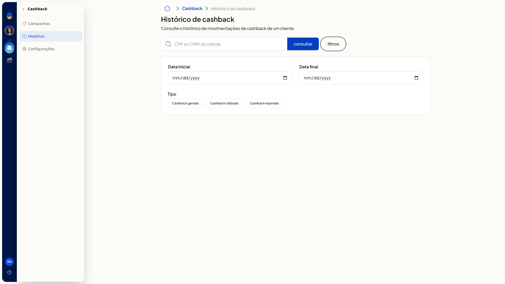
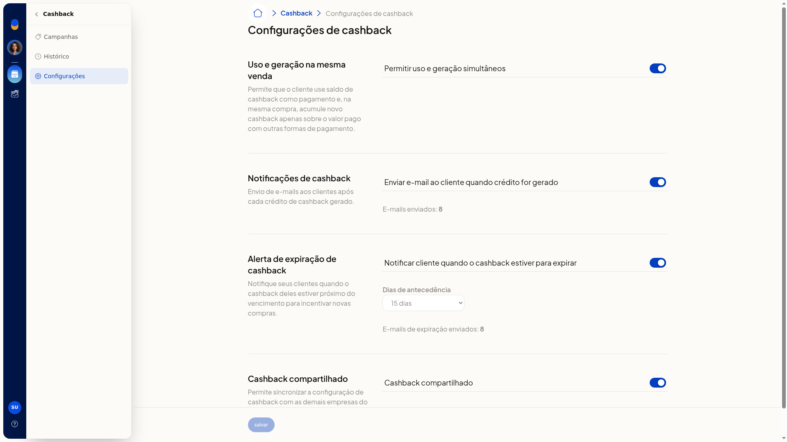

PDV: cashback
No PDV da Olist, você consulta as campanhas de cashback, o histórico e a configuração de geração, uso e aviso. Também pode usar o cashback como forma de recebimento da venda.
Pré-requisitos
- A opção Campanhas de cashback só aparece para quem tem o módulo de cashback.
Importante
- Campanhas de cashback aparece em Mais ações na tela inicial do PDV e some enquanto um item está sendo lançado.
Instruções
Consultar campanhas e configuração
-
Acesse Vendas > PDV.
-
Abra Mais ações > Campanhas de cashback.

-
No histórico, filtre por Data inicial, Data final e Tipo. Em Tipo, as opções são gerado, utilizado e expirado.

-
Na configuração, confira o uso e a geração simultâneos, o email ao gerar crédito, a notificação de expiração e o cashback compartilhado. Em Antecedência da notificação de cashback, as opções são Selecione, 1, 3, 7 e 15 dias. O texto de ajuda informa a quantidade de emails de expiração já enviados. Não salve se quiser apenas consultar.

Receber a venda com cashback
-
Acesse Vendas > PDV e monte a venda até a janela de recebimento.
-
Em Outras, selecione Cashback. A venda permanece pronta para finalizar, sem concluir o recebimento.

Resultado
Você consulta campanhas e histórico e vê as opções de geração, uso e aviso do cashback, sem gravar a configuração.
Informações adicionais
- O histórico de cashback não tem busca por cliente.